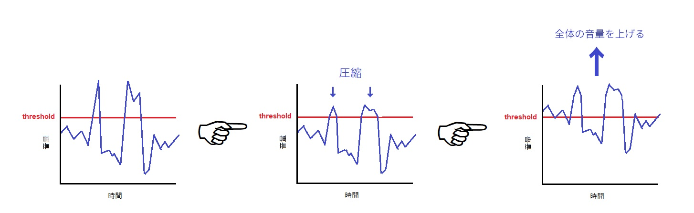

おまけ記事なので、講座本編よりかはやや雑な書き方をしていますが、ミックスに使う各種エフェクトを紹介し、またその使用方法を説明することを目標としています。
ここでは、様々なエフェクト(の一部)を紹介し、各エフェクトをかけられるおすすめのフリープラグインを掲示しておきます。ちなみに、Cakewalkでは全て内蔵プラグインが存在するみたいです。(が、外部のを使ったほうが取り回しがいいと思います。)
皆さんが一番よく知っている働きをするエフェクトかもしれません。各周波数ごとに、その振幅を大きくしたり小さくしたりすることで音色の調整を行うエフェクトです。いろいろな音楽プレイヤーに実装されているので、使ったことがある方も多いのではないかと思います。超高音、超低音を切るローパス、ハイパスフィルターも基本的についてきます。
おすすめはTDR Novaです。フリーながら多機能です。
人間は残響の具合から、空間を推測することができます。リバーブは残響を人工的に生み出して、音が響く空間を再現するエフェクトです。(ほわ～とした感じの音を付加します。)
筆者はシンセ内蔵のリバーブで何とかしちゃうので特におすすめはないんですけど、Halls of Fame 3というのがなかなか好評みたいです。やまびこのように反響させるエコー、短い時間の反響を生み出すディレイとともに空間系エフェクトと呼ばれています。エコーとディレイはあまり明確な区別がないように見えます。
特に自ら録音した音などは、場所によって音が大きかったり、小さかったりしてそのまま使うには難しいことが多いです。コンプレッサーはそんな音の大小差(ダイナミクスという)を圧縮(compress)して良い感じの音量に整えてくれるエフェクトです。コンプって略すことが多い。
原理は、ある一定の音量ライン(閾値(threshold)という)を超えた音を、ある比率(ratio)で圧縮するといった感じです。最後に全体の音量を上げることで、加工前と音量は変えず、均された音にできます。
イラストで表すとこんな感じです。
あとほっそい音を太くして他のパートに埋もれないようにする使い方もあります。
ただやりすぎると音が変になったりメリハリが失われたりするのでほどほどに。
内蔵のでもいいですが、おすすめはXfer Records OTTです。これはどちらかというと音を太くするときに使うやつですね。これを適当にかけるだけで今風の音になります。
OTTは低中高域3段階の帯域ごとにコンプのかかり具合を調節できるようになっています(こういうのをマルチバンドコンプといいます)。
音色を大きく変えないものとしては、TDR Kotelnikovがあります。どちらかというとマスタリングとかのときに重宝しそうです。
好きな周波数に対してコンプをかけることができるエフェクトです。要はコンプ+EQです。
先ほど紹介したTDR Novaは、実はこのダイナミックEQです。
リミッターはその名の通り、音の大きさを制限するエフェクトです。マキシマイザーは音圧を上げるエフェクトです。
これら二つは前述のコンプレッサーと実は原理がほぼ同じです。ratioがバカでかいという違いだけです。なのでここら辺も区別が曖昧なところがあります。
リミッターは主に、マスタートラックで音がピンポイントでデカくなってクリップを起こす、といったことを防ぐために使います。
一方マキシマイザーはマスターで音圧(音量の大きさの平均値の大きさみたいなやつ)を上げて迫力を出すためのものです。とはいうものの上述の通り区別は曖昧ですが……
筆者が使っているのはW1 Limiterですが、世間一般ではこのリミッター(の元となったもの)はもう時代遅れらしいのでもう一つ紹介しておきます。
kiloHearts Limiterです。
マキシマイザーだとUnlimitedというのがあります。
ディストーションは、音量を上げすぎて上限を超えてしまったときに起こる音の歪み、クリップを再現するエフェクトです。オーバードライブやサチュレーションも大体同じです。
波形が上限にぶち当たって強制的に押さえつけられるので、ノイズや音割れが混ざった音を作ることができます。
あまり使わなさそうなキワモノエフェクトだと思われるかもしれないですが、細いドラムの音などにほんの少量だけかけて目立つようにするといった、前述のコンプのような使い方で意外と使います。
Saturation Knobは操作が簡単でオススメです。強烈な歪みが欲しい場合は、Camel Crusherもいいと思います。
先述したエフェクト群を、実際のミックスの中で使っていく方法を紹介します。これでもかなり基礎的な部分しかやってないらしいです。そ、そんな……。
まず、キックとベースの超低音域(30Hz以下を目安に)を急なハイパスフィルターで切ります(そもそも聴環境によっては聴こえない)。キックとベースで切る周波数をちょっとズラすといいみたいです(キック30Hz, ベース50Hzみたいな具合)。それ以外のパートは100Hz以下を目安にハイパスフィルターで切ります。これで低音域をキックとベース専用の音域にできます。20Khz以上も同様にローパスフィルターで切ります。
ジャンルによっては切らなくてもいいという説もあります(は？ミックスわからん)。
コンプをかけて音の大きさをある程度揃えたら、EQで楽器ごとに被っている帯域を下げて、それぞれの楽器に場所を開けておきます。ここで、目立たせたい帯域を上げてもいいですが、そのようなブーストはできる限り控えるべきで、やるとしてもほんの僅か、というのが一般論です。
リバーブなどをかけて奥行きを調整します。きつくかけると遠くから聞こえてくる感じになります。
あまりかけすぎるとゴワゴワしてよく分からなくなるので、ほどほどがいいと思います。
本当はバストラックとかセンドとか使ってかける方がいいんですが説明は割愛。自分で調べてみてください。
筆者もこの記事の内容は勉強中です……。サイドチェインなどほかにもいっぱいエフェクトはあるのですが、ここでは割愛します。気になる人は調べてみてください。